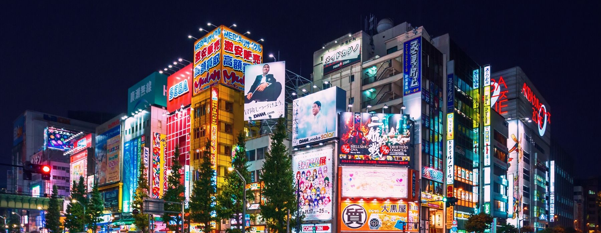

The most popular Citi

This Edo Period strolling garden is often considered Tokyo's most beautiful Japanese landscape garden alongside Koishikawa Korakuen.
Explore the magnificent Southbank riverfront, experience the city’s cultural charms in the arts precinct and see a glimpse of colonial history in central Melbourne.
Europe's tallest cantilevered observation wheel, and is the most popular paid tourist attraction in the United Kingdom with over 3 million visitors annually.
Capital and the largest city of the Czech Republic situated in the middle of Bohemia on the Vltava River. It took eleven centuries to get the look we know today.

Founded on a turquoise bay, this former fishing village is lined with Emerald City-esque skyscrapers, the colorful Souq Waqif, and the Museum of Islamic Art.
Rionever fails to impress us. The historic sites, sparkling beaches, green belts and cheerful attitude of the locals embrace the tourists where heaven meets the earth.

The menu features dishes from a contemporary European and Asian cuisine. Ithaa was built 10 years ago and will serve approximately another 10 until its construction erodes. So hurry up and do not delay the underwater dinner.
The Rock specializes in seafood, which is always fresh and delicious. The restaurant has received many good reviews not only for its appearance, but for the food, as well. The fresh breeze from the Ocean, calming sound of the tides and delicious dinner will make the experience great and unique in Africa.
At other times it serves light snacks and great desserts, that are being served in this gorgeous place, where you can feel soft sand under your feet and admire a beautiful view to the sea. It is a nice place to dine at any time of the day.
The unique surrounding is all natural and barely touched by people. Visitors enjoy authentic local cuisine and dine at the bamboo tables. Their feet are rinsed by the crystal clear water. What could be more refreshing in this humid climate! The running waterfall works as a natural air conditioner.